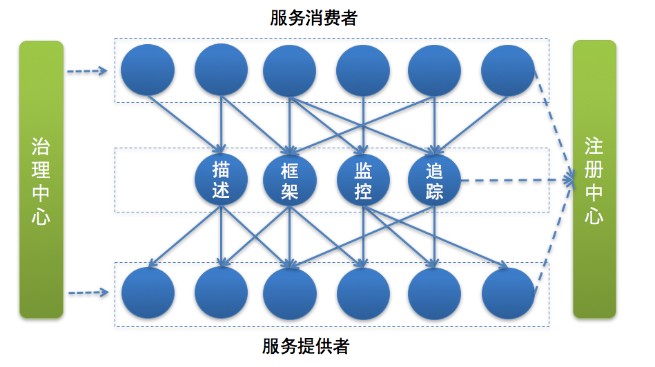

- 00 开篇词 微服务，从放弃到入门.md.html
- 01 到底什么是微服务？.md.html
- 02 从单体应用走向服务化.md.html
- 03 初探微服务架构.md.html
- 04 如何发布和引用服务？.md.html
- 05 如何注册和发现服务？.md.html
- 06 如何实现RPC远程服务调用？.md.html
- 07 如何监控微服务调用？.md.html
- 08 如何追踪微服务调用？.md.html
- 09 微服务治理的手段有哪些？.md.html
- 10 Dubbo框架里的微服务组件.md.html
- 11 服务发布和引用的实践.md.html
- 12 如何将注册中心落地？.md.html
- 13 开源服务注册中心如何选型？.md.html
- 14 开源RPC框架如何选型？.md.html
- 15 如何搭建一个可靠的监控系统？.md.html
- 16 如何搭建一套适合你的服务追踪系统？.md.html
- 17 如何识别服务节点是否存活？.md.html
- 18 如何使用负载均衡算法？.md.html
- 19 如何使用服务路由？.md.html
- 20 服务端出现故障时该如何应对？.md.html
- 21 服务调用失败时有哪些处理手段？.md.html
- 22 如何管理服务配置？.md.html
- 23 如何搭建微服务治理平台？.md.html
- 24 微服务架构该如何落地？.md.html
- 25 微服务为什么要容器化？.md.html
- 26 微服务容器化运维：镜像仓库和资源调度.md.html
- 27 微服务容器化运维：容器调度和服务编排.md.html
- 28 微服务容器化运维：微博容器运维平台DCP.md.html
- 29 微服务如何实现DevOps？.md.html
- 30 如何做好微服务容量规划？.md.html
- 31 微服务多机房部署实践.md.html
- 32 微服务混合云部署实践.md.html
- 33 下一代微服务架构Service Mesh.md.html
- 34 Istio：Service Mesh的代表产品.md.html
- 35 微博Service Mesh实践之路（上）.md.html
- 36 微博Service Mesh实践之路（下）.md.html
- 微博技术解密（上） 微博信息流是如何实现的？.md.html
- 微博技术解密（下）微博存储的那些事儿.md.html
- 结束语 微服务，从入门到精通.md.html
- 阿忠伯的特别放送 答疑解惑01.md.html
- 阿忠伯的特别放送 答疑解惑02.md.html
- 捐赠
03 初探微服务架构
上一期我给你讲了什么时候应该进行服务化，以及服务化拆分的两种方式即横向拆分和纵向拆分，最后还提到了引入微服务架构需要解决的问题。
我想你一定很好奇微服务架构到底是什么样子的，接下来我们一起走进微服务架构，来看看它的各个组成部分。
下面这张图是我根据自己的经验，绘制的微服务架构的模块图，在具体介绍之前先来看下一次正常的服务调用的流程。

首先服务提供者（就是提供服务的一方）按照一定格式的服务描述，向注册中心注册服务，声明自己能够提供哪些服务以及服务的地址是什么，完成服务发布。
接下来服务消费者（就是调用服务的一方）请求注册中心，查询所需要调用服务的地址，然后以约定的通信协议向服务提供者发起请求，得到请求结果后再按照约定的协议解析结果。
而且在服务的调用过程中，服务的请求耗时、调用量以及成功率等指标都会被记录下来用作监控，调用经过的链路信息会被记录下来，用于故障定位和问题追踪。在这期间，如果调用失败，可以通过重试等服务治理手段来保证成功率。
总结一下，微服务架构下，服务调用主要依赖下面几个基本组件：
服务描述
注册中心
服务框架
服务监控
服务追踪
服务治理
接下来，我来为你一一介绍这些组件。
服务描述
服务调用首先要解决的问题就是服务如何对外描述。比如，你对外提供了一个服务，那么这个服务的服务名叫什么？调用这个服务需要提供哪些信息？调用这个服务返回的结果是什么格式的？该如何解析？这些就是服务描述要解决的问题。
常用的服务描述方式包括RESTful API、XML配置以及IDL文件三种。
其中，RESTful API方式通常用于HTTP协议的服务描述，并且常用Wiki或者Swagger来进行管理。下面是一个RESTful API方式的服务描述的例子。

XML配置方式多用作RPC协议的服务描述，通过*.xml配置文件来定义接口名、参数以及返回值类型等。下面是一个XML配置方式的服务描述的例子。
IDL文件方式通常用作Thrift和gRPC这类跨语言服务调用框架中，比如gRPC就是通过Protobuf文件来定义服务的接口名、参数以及返回值的数据结构，示例如下：
注册中心
有了服务的接口描述，下一步要解决的问题就是服务的发布和订阅，就是说你提供了一个服务，如何让外部想调用你的服务的人知道。这个时候就需要一个类似注册中心的角色，服务提供者将自己提供的服务以及地址登记到注册中心，服务消费者则从注册中心查询所需要调用的服务的地址，然后发起请求。
一般来讲，注册中心的工作流程是：
服务提供者在启动时，根据服务发布文件中配置的发布信息向注册中心注册自己的服务。
服务消费者在启动时，根据消费者配置文件中配置的服务信息向注册中心订阅自己所需要的服务。
注册中心返回服务提供者地址列表给服务消费者。
当服务提供者发生变化，比如有节点新增或者销毁，注册中心将变更通知给服务消费者。
服务框架
通过注册中心，服务消费者就可以获取到服务提供者的地址，有了地址后就可以发起调用。但在发起调用之前你还需要解决以下几个问题。
服务通信采用什么协议？就是说服务提供者和服务消费者之间以什么样的协议进行网络通信，是采用四层TCP、UDP协议，还是采用七层HTTP协议，还是采用其他协议？
数据传输采用什么方式？就是说服务提供者和服务消费者之间的数据传输采用哪种方式，是同步还是异步，是在单连接上传输，还是多路复用。
数据压缩采用什么格式？通常数据传输都会对数据进行压缩，来减少网络传输的数据量，从而减少带宽消耗和网络传输时间，比如常见的JSON序列化、Java对象序列化以及Protobuf序列化等。
服务监控
一旦服务消费者与服务提供者之间能够正常发起服务调用，你就需要对调用情况进行监控，以了解服务是否正常。通常来讲，服务监控主要包括三个流程。
指标收集。就是要把每一次服务调用的请求耗时以及成功与否收集起来，并上传到集中的数据处理中心。
数据处理。有了每次调用的请求耗时以及成功与否等信息，就可以计算每秒服务请求量、平均耗时以及成功率等指标。
数据展示。数据收集起来，经过处理之后，还需要以友好的方式对外展示，才能发挥价值。通常都是将数据展示在Dashboard面板上，并且每隔10s等间隔自动刷新，用作业务监控和报警等。
服务追踪
除了需要对服务调用情况进行监控之外，你还需要记录服务调用经过的每一层链路，以便进行问题追踪和故障定位。
服务追踪的工作原理大致如下：
服务消费者发起调用前，会在本地按照一定的规则生成一个requestid，发起调用时，将requestid当作请求参数的一部分，传递给服务提供者。
服务提供者接收到请求后，记录下这次请求的requestid，然后处理请求。如果服务提供者继续请求其他服务，会在本地再生成一个自己的requestid，然后把这两个requestid都当作请求参数继续往下传递。
以此类推，通过这种层层往下传递的方式，一次请求，无论最后依赖多少次服务调用、经过多少服务节点，都可以通过最开始生成的requestid串联所有节点，从而达到服务追踪的目的。
服务治理
服务监控能够发现问题，服务追踪能够定位问题所在，而解决问题就得靠服务治理了。服务治理就是通过一系列的手段来保证在各种意外情况下，服务调用仍然能够正常进行。
在生产环境中，你应该经常会遇到下面几种状况。
单机故障。通常遇到单机故障，都是靠运维发现并重启服务或者从线上摘除故障节点。然而集群的规模越大，越是容易遇到单机故障，在机器规模超过一百台以上时，靠传统的人肉运维显然难以应对。而服务治理可以通过一定的策略，自动摘除故障节点，不需要人为干预，就能保证单机故障不会影响业务。
单IDC故障。你应该经常听说某某App，因为施工挖断光缆导致大批量用户无法使用的严重故障。而服务治理可以通过自动切换故障IDC的流量到其他正常IDC，可以避免因为单IDC故障引起的大批量业务受影响。
依赖服务不可用。比如你的服务依赖依赖了另一个服务，当另一个服务出现问题时，会拖慢甚至拖垮你的服务。而服务治理可以通过熔断，在依赖服务异常的情况下，一段时期内停止发起调用而直接返回。这样一方面保证了服务消费者能够不被拖垮，另一方面也给服务提供者减少压力，使其能够尽快恢复。
上面是三种最常见的需要引入服务治理的场景，当然还有一些其他服务治理的手段比如自动扩缩容，可以用来解决服务的容量问题。
总结
通过前面的讲解，相信你已经对微服务架构有了基本的认识，对微服务架构的基本组件也有了初步了解。
这几个基本组件共同组成了微服务架构，在生产环境下缺一不可，所以在引入微服务架构之前，你的团队必须掌握这些基本组件的原理并具备相应的开发能力。实现方式上，可以引入开源方案；如果有充足的资深技术人员，也可以选择自行研发微服务架构的每个组件。但对于大部分中小团队来说，我认为采用开源实现方案是一个更明智的选择，一方面你可以节省相关技术人员的投入从而更专注于业务，另一方面也可以少走弯路少踩坑。不管你是采用开源方案还是自行研发，都必须吃透每个组件的工作原理并能在此基础上进行二次开发。
专栏后面的内容，我会带你对这几个微服务架构的基本组件进行详细剖析，让你能知其然也知其所以然。
思考题
最后你可以思考一下，微服务架构下的基本组件所解决的问题，对应到单体应用时是否存在？如果存在，解决方案是否相同？
欢迎你在留言区写下自己的思考，与我一起讨论。
© 2019 - 2023 Liangliang Lee. Powered by gin and hexo-theme-book.